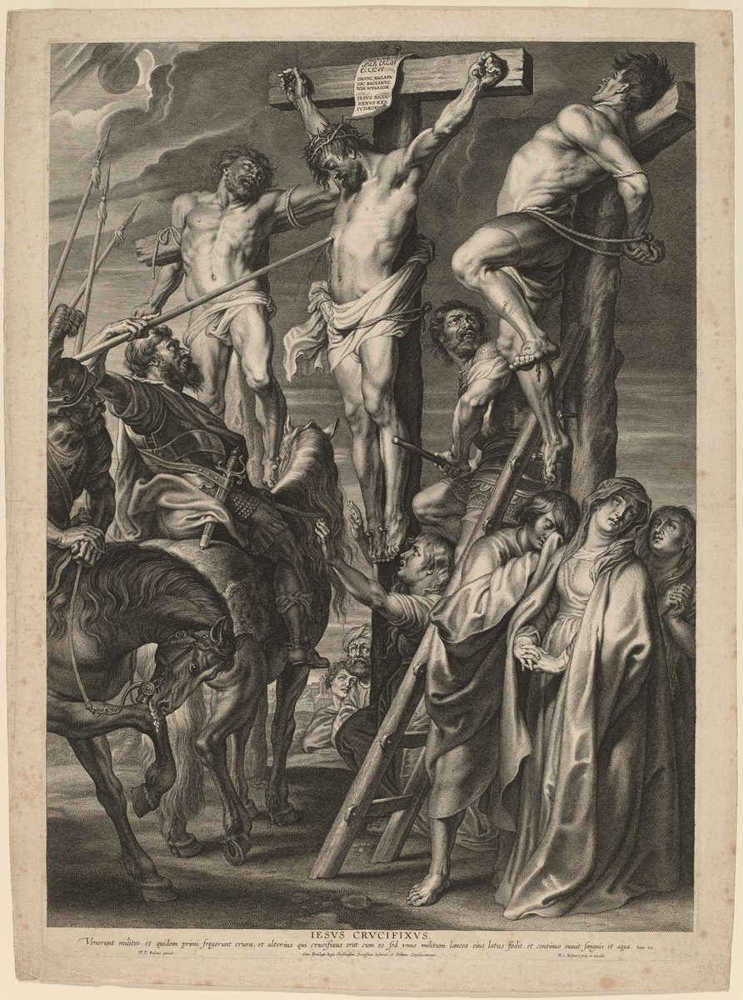

1 John 5 — The Mister Translation

⚠ Bolswert’s engraving of Rubens’s altarpiece, beside verse 6, ‘This is the one who came through water and blood.’ The plate is lettered with John 19 in Latin, ending ‘et continuo exivit sanguis et aqua,’ ‘and at once blood and water came out.’ That the letter’s water and blood are this water and blood is one reading among several.

Translator’s Notes
“Everyone who believes that Jesus is the Christ has been born of God, and everyone who loves the one who fathered loves also the one born of him.” “Has been born of God” is the perfect of “born of him” at 1 John 2:29 and of “born of God” at 3:9 and 4:7; the confession is the one the liar of 1 John 2:22 denies, “that Jesus is the Christ.” “The one who fathered” is the active of the same verb, gennaō, as in “Abraham fathered Isaac” (Matthew 1:2): whoever loves a father loves his child. Westcott-Hort leaves out “also.” The KJV reads “every one that loveth him that begat loveth him also that is begotten of him”; the NWT 1984 reads “everyone who loves the one that caused to be born loves him who has been born from that one”; the NIV reads “everyone who loves the father loves his child as well.”
“By this we know that we love the children of God: when we love God and do his commandments. For this is the love of God: that we keep his commandments; and his commandments are not heavy.” In chapter 4 the test ran the other way, from the brother seen to God unseen (1 John 4:20); here love of God and obedience show love of his children. “The love of God” is love for God, and it is defined as Jesus defined it: “If you love me, you will keep my commandments” (John 14:15). The Byzantine text reads “keep” for “do” in verse 2: the KJV reads “and keep his commandments”; the ASV reads “when we love God and do his commandments.” Barus, “heavy,” stands in six verses (dictionary). Among them are the scribes’ “heavy loads” laid on people’s shoulders (Matthew 23:4); Jesus said, “my yoke is kind, and my burden is light” (Matthew 11:30). The KJV reads “his commandments are not grievous”; the NWT 1984 reads “his commandments are not burdensome”; the Douay reads “his commandments are not heavy.”
“Because everything that has been born of God conquers the world. And this is the victory that has conquered the world, our faith. And who is the one who conquers the world, if not the one who believes that Jesus is the Son of God?” “Everything” is neuter, pan, the whole of what is born of God. “Conquer” is nikaō, as in “you have conquered them” (1 John 4:4) and Jesus’s “I have conquered the world” (John 16:33) (dictionary). ⚠ Its noun nikē, “victory,” stands nowhere else in the New Testament (dictionary), and pistis, “faith,” stands nowhere else in John’s Gospel or letters, which say “believe” instead, as in “so that you may believe that Jesus is the Christ” (John 20:31) (dictionary). Tregelles and the 28th Nestle-Aland edition read “And who is”; the Byzantine text has no “and.” The KJV reads “this is the victory that overcometh the world, even our faith. Who is he that overcometh the world”; the ASV reads “And who is he that overcometh the world”; the NWT 1984 reads “this is the conquest that has conquered the world, our faith.”
⚠ “This is the one who came through water and blood, Jesus Christ; not with the water only, but with the water and with the blood.” What the water and the blood are, readings differ: Jesus’s baptism and his death, the coming that began at the Jordan and was completed on the cross, said against teachers who would grant the first and not the second; the blood and water that came out of his side, “and immediately blood and water came out” (John 19:34), with the next verse’s “The one who saw it has testified”; baptism and the Lord’s supper; or birth and death. The letter has already said “the blood of Jesus his Son cleanses us from all sin” (1 John 1:7). The Byzantine text has no second “with” before “the blood.” The KJV reads “not by water only, but by water and blood”; the ASV reads “not with the water only, but with the water and with the blood.”
“And the Spirit is the one who testifies, because the Spirit is the truth.” Jesus said of the Spirit of truth, “he will testify about me” (John 15:26), and of himself, “I am the way and the truth and the life” (John 14:6) (dictionary). The ASV numbers this sentence as verse 7: “And it is the Spirit that beareth witness, because the Spirit is the truth.” The NWT 1984 reads “the spirit is that which is bearing witness, because the spirit is the truth,” in lower case and as a thing, in keeping with its doctrinal reading of the holy spirit as God’s active force; the Douay reads “And it is the Spirit which testifieth, that Christ is the truth.”
⚠ “For there are three who testify: the Spirit and the water and the blood; and the three agree as one.” “Three who testify” is masculine though the three nouns are not, as if they were persons, the two or three witnesses the Law requires (Deuteronomy 19:15; John 8:17) (dictionary). “Agree as one” is eis to hen eisin, “are for the one thing”: the three give one testimony. Here stands the Johannine Comma. The KJV reads “For there are three that bear record in heaven, the Father, the Word, and the Holy Ghost: and these three are one. And there are three that bear witness in earth”; the Geneva reads “For there are three, which bear record in heaven”; the Douay reads “And there are three who give testimony in heaven.” The words are in neither the critical editions nor the Byzantine text named on these pages, and this translation follows them. Their history is reported here, not checked: they appear first in Latin writers of the fourth century and in Latin Bibles; only a handful of late Greek manuscripts have them, several in the margin; Erasmus left them out of his first two Greek New Testaments and printed them in his third (1522), and from there they passed into the Received Text that the KJV translates. A few defend them as original; most editors take them as a Latin gloss on the three witnesses. The ASV reads “For there are three who bear witness, the Spirit, and the water, and the blood: and the three agree in one”; the NWT 1984 reads “For there are three witness bearers”; the NIV reads “and the three are in agreement.”
“If we receive the testimony of men, the testimony of God is greater; for this is the testimony of God: that he has testified about his Son.” Martyria, “testimony,” stands in thirty-two verses of the New Testament (dictionary), and twenty-six of them are in John’s Gospel, letters and Revelation. Here it comes six times in three verses. Jesus said, “Not that I receive testimony from man” (John 5:34), and “I have the testimony greater than John’s” (John 5:36). The Byzantine text reads “which he has testified”: the KJV reads “for this is the witness of God which he hath testified of his Son”; the ASV reads “that he hath borne witness concerning his Son”; the Douay adds “which is greater, because he hath testified of his Son.”
“Whoever believes in the Son of God has the testimony in himself. Whoever does not believe God has made him a liar, because he has not believed in the testimony that God has testified about his Son.” “In himself” is Westcott-Hort’s hautōi; Tregelles, the 28th Nestle-Aland edition and the Byzantine text read autōi, “in him” or “in it,” and the 27th edition read heautōi, “in himself.” “Made him a liar” is the “we make him a liar” of 1 John 1:10 (dictionary). The KJV reads “hath the witness in himself”; the ASV reads “hath the witness in him”; the NWT 1984 reads “has the witness given in his own case”; the NIV reads “accepts this testimony”; the Douay reads “He that believeth not the Son, maketh him a liar.”
“And this is the testimony: that God gave us eternal life, and this life is in his Son. Whoever has the Son has the life; whoever does not have the Son of God does not have the life.” Eternal life is “the promise that he himself promised us” (1 John 2:25), and the letter opened by calling the Son “the eternal life which was with the Father” (1 John 1:2); the Gospel says “In him was life” (John 1:4). The Greek has the article, “the life,” both times. The ASV reads “He that hath the Son hath the life”; the KJV reads “He that hath the Son hath life”; the NWT 1984 reads “has this life.”
“I have written these things to you so that you may know that you have eternal life — to you who believe in the name of the Son of God.” The Gospel ends its account with “these have been written so that you may believe that Jesus is the Christ, the Son of God, and that by believing you may have life in his name” (John 20:31); the letter writes to those who already believe, so that they may know. “I have written” is the aorist of “I have written these things to you about those who are leading you astray” (1 John 2:26). The Byzantine text is longer: the KJV reads “These things have I written unto you that believe on the name of the Son of God; that ye may know that ye have eternal life, and that ye may believe on the name of the Son of God”; the ASV reads “even unto you that believe on the name of the Son of God.”
“And this is the boldness that we have toward him: that if we ask anything according to his will, he hears us. And if we know that he hears us in whatever we ask, we know that we have the requests that we have asked of him.” “Boldness” is parrēsia for the fourth time in the letter: at his coming (2:28), toward God (3:21), in the day of judgment (4:17), and now in prayer (dictionary). “Whatever we ask” is the “whatever we ask we receive from him” of 1 John 3:22 and Jesus’s “whatever you ask the Father, he will give you in my name” (John 16:23) (dictionary); “according to his will” is the condition. Aitēma, “request,” stands in three verses (dictionary): Pilate granting the crowd’s “demand” (Luke 23:24), “let your requests be made known to God” (Philippians 4:6), and this one. The ASV reads “this is the boldness which we have toward him”; the KJV reads “this is the confidence that we have in him”; the NIV reads “This is the confidence we have in approaching God.”
⚠ “If anyone sees his brother sinning a sin not leading to death, he will ask, and he will give him life — to those who sin not leading to death. There is sin leading to death; I do not say that he should make request about that.” “He will give him life” has no named subject: God, or the one who asks, as the means of the gift. The ASV reads “he shall ask, and God will give him life”; the NIV reads “you should pray and God will give them life,” both supplying “God.” “Leading to death” is pros thanaton, and the phrase stands in three verses. The third is Jesus’s “This sickness is not unto death” (John 11:4). What the sin leading to death is, the letter does not say, and readings differ: the denial of the Son by those who “went out from us” (1 John 2:19); a sin punished with bodily death, as Ananias “fell down and breathed his last” (Acts 5:5) and “not a few have fallen asleep” (1 Corinthians 11:30); the Law’s sin “with a high hand,” for which a soul “shall be cut off” (Numbers 15:30); or blasphemy against the Holy Spirit, which “has no forgiveness into the age” (Mark 3:29). The writer does not forbid prayer for it; he only does not command it, and he changes the verb from aiteō, “ask,” to erōtaō, “make request” (dictionary); whether the change matters, readings differ. The KJV reads “There is a sin unto death: I do not say that he shall pray for it”; the NWT 1984 reads “a sin that does not incur death”; the TLB reads “that one fatal sin,” making it one.
“All unrighteousness is sin, and there is sin not leading to death.” “Unrighteousness” is adikia, as in “to cleanse us from all unrighteousness” (1 John 1:9); the letter’s other definition was “sin is lawlessness” (1 John 3:4) (dictionary). The KJV reads “and there is a sin not unto death”; the NIV reads “All wrongdoing is sin”; the Douay reads “And there is a sin unto death,” without the “not.”
⚠ “We know that everyone who has been born of God does not sin; but the one who was born of God keeps him, and the evil one does not touch him.” The letter ends with three sentences that begin “We know.” “Does not sin” is the hard saying of 1 John 3:6, said more strongly at 3:9, whose readings are set out in the note there. “The one who was born of God” is an aorist, once for all, and this translation takes it as the Son, who keeps the believer, as Jesus prayed, “I kept them in your name” and “keep them from the evil one” (John 17:12, John 17:15). Westcott-Hort, Tregelles and the 27th Nestle-Aland edition read auton, “him”; the 28th edition and the Byzantine text read heauton, “himself,” and then the believer keeps himself. The KJV reads “he that is begotten of God keepeth himself”; the ASV reads “he that was begotten of God keepeth himself”; the NWT 1984 reads “the One born from God watches him”; the NIV reads “the One who was born of God keeps them safe”; the Douay reads “the generation of God preserveth him.”
“We know that we are of God, and the whole world lies in the evil one.” “The evil one” is the one the young men conquered (1 John 2:13) and Cain was of (1 John 3:12); the Greek form can also be read “in evil.” The ASV reads “the whole world lieth in the evil one”; the KJV reads “the whole world lieth in wickedness”; the NWT 1984 reads “the whole world is lying in the [power of the] wicked one.”
⚠ “And we know that the Son of God has come and has given us understanding, so that we know the one who is true; and we are in the one who is true, in his Son Jesus Christ. This one is the true God and eternal life.” “Has come” is hēkei, the verb of Jesus’s “I came from God and I am here” (John 8:42). Dianoia, “understanding,” stands only here in John’s Gospel and letters (dictionary). “The one who is true” is alēthinos, the word of “the only true God” (John 17:3) (dictionary). Westcott-Hort and Tregelles read “we know,” the 28th Nestle-Aland edition and the Byzantine text “we may know”: the KJV reads “that we may know him that is true”; the ASV reads “that we know him that is true.” ⚠ “This one” is houtos, and readings differ on whom it names. The nearest name is Jesus Christ, and read so the letter ends by calling him the true God, as the Gospel says “The only God” (John 1:18) and Thomas “My Lord and my God!” (John 20:28). Read of “the one who is true,” the Father, it matches “the only true God, and the one you sent, Jesus Christ” of John 17:3. This translation keeps “This one” as open as the Greek. The KJV reads “This is the true God, and eternal life”; the NWT 1984 reads “This is the true God and life everlasting”; the NIV reads “He is the true God and eternal life”; the TLB reads “who is the only true God,” choosing Jesus.
“Little children, guard yourselves from idols.” “Guard” is phylassō, Jesus’s “I guarded them” at John 17:12. Eidōlon, “idol,” stands only here in John’s Gospel and letters (dictionary); Revelation has “idols of gold and silver” at Revelation 9:20. Whether the idols are the images of the cities the readers lived in, or anything set in the place of “the true God” just named, readings differ; Paul joins the two the same way, “you turned to God from the idols, to serve a living and true God” (1 Thessalonians 1:9). The Byzantine text ends with “Amen”: the KJV reads “Little children, keep yourselves from idols. Amen.” The NWT 1984 reads “Little children, guard yourselves from idols.”
Patterns worth carrying forward
Where this translation keeps the exact words: “has been born of God,” as at 3:9 and 4:7; “the one who fathered,” as at Matthew 1:2; “not heavy”; “victory” and “faith,” each once; “through water and blood”; “three who testify,” with no witnesses in heaven; “agree as one”; “testimony,” six times; “made him a liar,” as at 1:10; “the life,” with the article; “boldness,” the fourth time; “requests”; “sin leading to death”; “keeps him”; “lies in the evil one”; “the one who is true”; “This one,” as open as the Greek; and “guard yourselves.”
Echoes paid. “Everyone who believes that Jesus is the Christ has been born of God,” “the victory that has conquered the world,” “the one who came through water and blood” and “the true God and eternal life,” promised at the close of 1 John 4; born of God from 1 John 2:29; the confession denied by the liar of 1 John 2:22; conquered from 1 John 2:13 and 4:4; the blood of 1 John 1:7; “a liar” from 1 John 1:10; eternal life from 1 John 1:2 and 2:25; boldness from 1 John 2:28, 3:21 and 4:17; “whatever we ask” from 1 John 3:22; “sin leading to death,” promised at 1 John 3:6; “does not sin” from 1 John 3:6; and the evil one from 1 John 2:13 and 3:12.
The end of the letter. 1 John opened with “that which was from the beginning” and “the eternal life which was with the Father” (1 John 1:1–2), and it closes with “the true God and eternal life” and a warning against idols. It never names its writer or its readers. Its tests, walking in the light, loving the brother, and confessing Jesus Christ come in flesh, return in 2 John.
Next in this book: none; 1 John ends here.